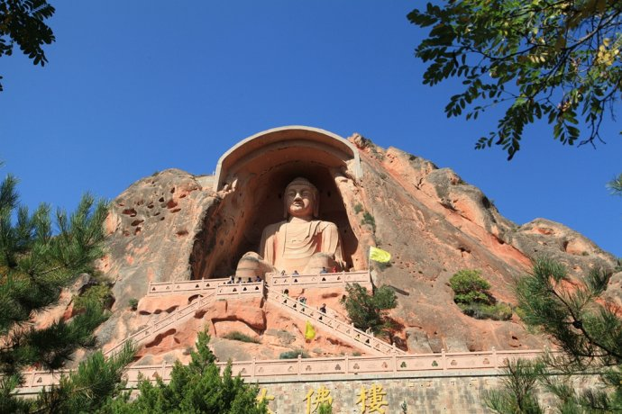
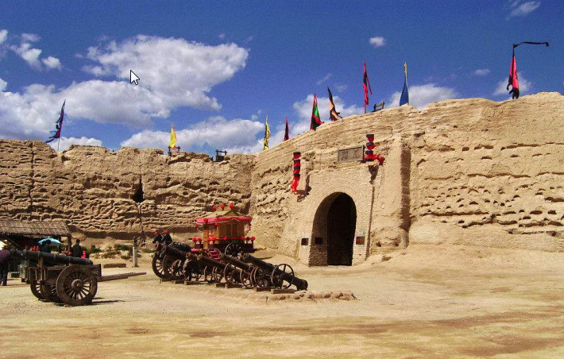

宁夏风光 NING XIA FENG GUANG 欢迎光临我的网站！ |
| 首页 | 塞上新景 | 沙湖苇舟 | 神秘西夏 | 沙坡鸣钟 | 须弥松涛 | 西部影城 |
 |
“新景观”是一扇窗，透过这扇窗，发现宁夏之美；“新景观”是一双眼睛，透过这双眼，领略宁夏的神奇。 |
提起沙湖，人们感叹最多的是它沙水相依的奇观，沙与水原本该是势不相容的，但在这里，一切都浑然天成。 |
|
.jpg) |
西夏王陵每座帝陵陵园均是一个完整的建筑群体，占地面积在10万平方米以上，被世人誉为“神秘的奇迹”、“东方金字塔”。 |
.jpg) |
有中国最大的天然滑沙场，有横跨黄河的“天下黄河第一索”有黄河文化代表古老水车，有黄河上最古老的运输工具羊皮筏子，有沙漠中难得一见的海市蜃楼。 |
|  | 须弥山是佛教经典的翻译，石窟的开凿、佛本生的故事及壁画的出现而产生的，也就是随着佛教的东传而产生的，一千多年来，佛教文化深深的影响着中国传统文化。 |
 | 镇北堡西部影城，被誉为“东方好莱坞。在中国众多的影视城中，西部影城是中国三大影视城之一，也是中国西部唯一著名影视城。 |
网站制作：马宁
本站只为介绍宁夏的美丽风光而创建，部分内容采集自互联网，版权归原作者所有
作者联系方式 E-mail:maning@qq.com QQ:463195760